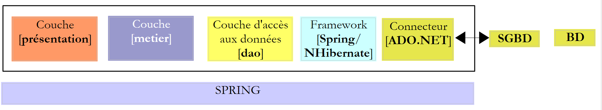
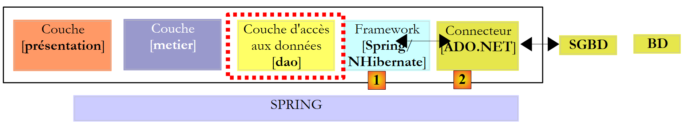
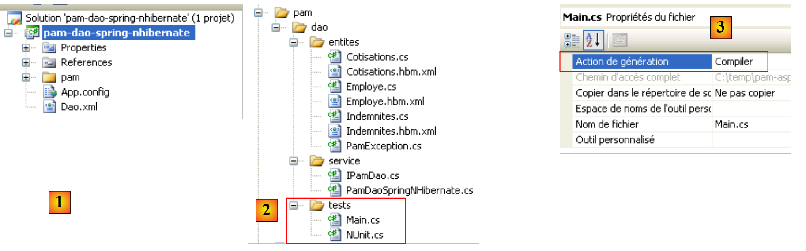
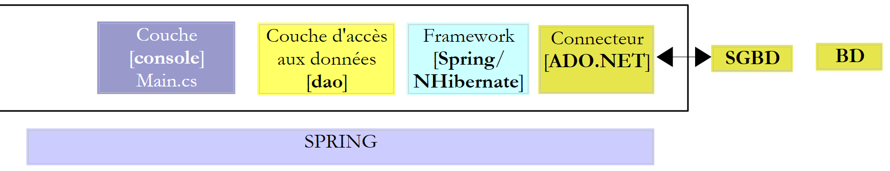
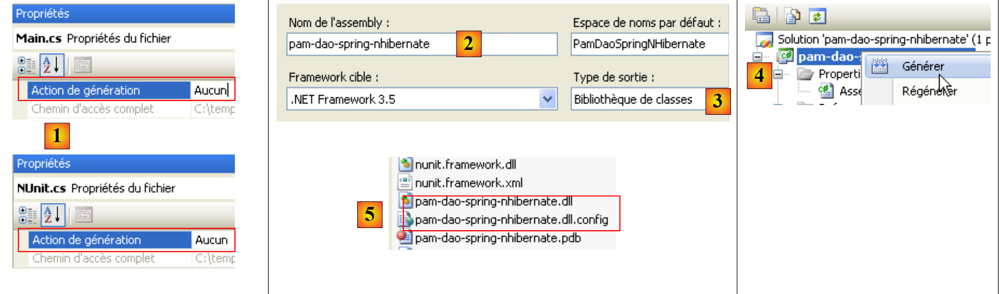

2. Integrazione Spring / NHibernate
Il framework Spring offre classi di utilità per lavorare con il framework NHibernate. L’utilizzo di queste classi semplifica la scrittura del codice per l’accesso ai dati di un SGBD. Consideriamo la seguente architettura a più livelli:
 |
Di seguito, realizzeremo un livello [dao] con [Spring / NHibernate], commentando il codice di una soluzione funzionante. Non cercheremo di illustrare tutte le possibilità di configurazione o di utilizzo del framework [Spring / Nhibernate]. Il lettore potrà adattare la soluzione proposta alle proprie esigenze avvalendosi della documentazione di Spring.NET [Spring.NET | Homepage ] (dicembre 2011).
2.1. Il livello di accesso ai dati [dao]
 |
Il database è quello già presentato al paragrafo 1.2: MySQL [dbpam_nhibernate]. Il livello [dao] implementa la seguente interfaccia C#:
using Pam.Dao.Entites;
namespace Pam.Dao.Service {
public interface IPamDao {
// elenco di tutte le identità dei dipendenti
Employe[] GetAllIdentitesEmployes();
// un determinato dipendente con le relative indennità
Employe GetEmploye(string ss);
// elenco di tutti i contributi
Cotisations GetCotisations();
}
}
2.1.1. Il progetto Visual Studio C# del livello [dao]
Il progetto Visual Studio del livello [dao] è il seguente:
 |
- in [1], il progetto nella sua interezza
- la cartella [pam] contiene le classi del progetto e la configurazione delle entità NHibernate
- i file [App.config] e [Dao.xml] configurano il framework Spring / NHibernate. Dovremo descrivere il contenuto di questi due file.
- In [2] sono presenti le diverse classi del progetto
- nella cartella [entites] troviamo le entità NHibernate esaminate nel progetto precedente (cfr. pagina 14)
- nella cartella [service] troviamo l’interfaccia [IPamDao] e la sua implementazione con il framework Spring / NHibernate [PamDaoSpringNHibernate].
- La cartella [tests] contiene i test dell’interfaccia [IPamDao].
- In [3] sono presenti i riferimenti del progetto. L’integrazione Spring / NHibernate richiede nuovi DLL e [4].
Nei riferimenti [3] del progetto si trovano i seguenti DLL:
- NHibernate: per ORM e NHibernate
- MySql.Data: il driver ADO.NET del SGBD MySQL 5
- Spring.Core: per il framework Spring che garantisce l'integrazione dei livelli
- log4net: una libreria di log
- nunit.framework: una libreria di test unitari
- Spring.Aop, Spring.Data e Spring.Data.NHibernate32: garantiscono il supporto Spring / NHibernate.
Ci assicureremo che tutti questi DLL abbiano la proprietà "Copia locale" impostata su True.
2.1.2. Configurazione del progetto C#
Il progetto è configurato come segue:
 |
- in [1], il nome dell’assembly del progetto è [pam-dao-spring-nhibernate]. Questo nome compare in vari file di configurazione del progetto.
2.1.3. Le entità del livello [dao]
 |
Le entità (oggetti) necessarie per il livello [dao] sono state raccolte nella cartella [entites] [1] del progetto. Queste entità sono quelle del progetto precedente (cfr. paragrafo 1.3.2), con l'unica differenza che si trova nei file di configurazione NHibernate. Prendiamo ad esempio il file [Employe.hbm.xml]:
- in [2], il file è configurato per essere incorporato nell'assembly del progetto
Il suo contenuto è il seguente:
<?xml version="1.0" encoding="utf-8" ?>
<hibernate-mapping xmlns="urn:nhibernate-mapping-2.2"
namespace="Pam.Dao.Entites" assembly="pam-dao-spring-nhibernate">
<class name="Employe" table="EMPLOYES">
<id name="Id" column="ID">
<generator class="native" />
</id>
<version name="Version" column="VERSION"/>
<property name="SS" column="SS" length="15" not-null="true" unique="true"/>
<property name="Nom" column="NOM" length="30" not-null="true"/>
<property name="Prenom" column="PRENOM" length="20" not-null="true"/>
<property name="Adresse" column="ADRESSE" length="50" not-null="true" />
<property name="Ville" column="VILLE" length="30" not-null="true"/>
<property name="CodePostal" column="CP" length="5" not-null="true"/>
<many-to-one name="Indemnites" column="INDEMNITE_ID" cascade="all" lazy="false"/>
</class>
</hibernate-mapping>
- riga 3: l’attributo assembly indica che il file [Employe.hbm.xml] si troverà nell’assembly [pam-dao-spring-nhibernate]
Inoltre, nella cartella [entites], troviamo una classe di eccezione utilizzata dal progetto:
using System;
namespace Pam.Dao.Entites {
public class PamException : Exception {
// il codice di errore
public int Code { get; set; }
// costruttori
public PamException() {
}
public PamException(int Code)
: base() {
this.Code = Code;
}
public PamException(string message, int Code)
: base(message) {
this.Code = Code;
}
public PamException(string message, Exception ex, int Code)
: base(message, ex) {
this.Code = Code;
}
}
}
La classe [PamException] è stata derivata dalla classe [Exception] (riga 4) per aggiungervi un codice di errore (riga 7).
2.1.4. Configurazione Spring / NHibernate
Torniamo al progetto Visual C#:
 |
- In [1], i file [App.config] e [Dao.xml] configurano l'integrazione Spring / NHibernate
2.1.4.1. Il file [App.config]
Il file [App.config] è il seguente:
<?xml version="1.0" encoding="utf-8" ?>
<configuration>
<!-- sezioni di configurazione -->
<configSections>
<sectionGroup name="spring">
<section name="parsers" type="Spring.Context.Support.NamespaceParsersSectionHandler, Spring.Core" />
<section name="objects" type="Spring.Context.Support.DefaultSectionHandler, Spring.Core" />
<section name="context" type="Spring.Context.Support.ContextHandler, Spring.Core" />
</sectionGroup>
<section name="log4net" type="log4net.Config.Log4NetConfigurationSectionHandler,log4net" />
</configSections>
<!-- Configurazione Spring -->
<spring>
<parsers>
<parser type="Spring.Data.Config.DatabaseNamespaceParser, Spring.Data" />
</parsers>
<context>
<resource uri="Dao.xml" />
</context>
</spring>
<!-- Questa sezione contiene le impostazioni di configurazione di log4net -->
<!-- NOTE IMPORTANTE: i log non sono attivi per impostazione predefinita. È necessario attivarli a livello di programma
avec l'instruction log4net.Config.XmlConfigurator.Configure();
! -->
<log4net>
<appender name="ConsoleAppender" type="log4net.Appender.ConsoleAppender">
<layout type="log4net.Layout.PatternLayout">
<conversionPattern value="%-5level %logger - %message%newline" />
</layout>
</appender>
<!-- Impostare il livello di registrazione predefinito su DEBUG -->
<root>
<level value="DEBUG" />
<appender-ref ref="ConsoleAppender" />
</root>
<!-- Imposta la registrazione per Spring. I nomi dei logger in Spring corrispondono allo spazio dei nomi -->
<logger name="Spring">
<level value="INFO" />
</logger>
<logger name="Spring.Data">
<level value="DEBUG" />
</logger>
<logger name="NHibernate">
<level value="DEBUG" />
</logger>
</log4net>
</configuration>
Il file [App.config] sopra riportato configura Spring (righe 5-9, 15-22), log4net (riga 10, righe 28-53) ma non NHibernate. Gli oggetti Spring non sono configurati nel file [App.config], ma nel file [Dao.xml] (riga 20). La configurazione di Spring / NHibernate, che consiste nel dichiarare oggetti Spring specifici, si troverà quindi in questo file.
2.1.4.2. Il file [Dao.xml]
Il file [Dao.xml], che raccoglie gli oggetti gestiti da Spring, è il seguente:
<?xml version="1.0" encoding="utf-8" ?>
<objects xmlns="http://www.springframework.net"
xmlns:db="http://www.springframework.net/database">
<!-- Riferito dal file di configurazione del contesto dell’applicazione principale -->
<description>
Application Spring / NHibernate
</description>
<!-- Configurazione del database e di NHibernate -->
<db:provider id="DbProvider"
provider="MySql.Data.MySqlClient"
connectionString="Server=localhost;Database=dbpam_nhibernate;Uid=root;Pwd=;"/>
<object id="NHibernateSessionFactory" type="Spring.Data.NHibernate.LocalSessionFactoryObject, Spring.Data.NHibernate32">
<property name="DbProvider" ref="DbProvider"/>
<property name="MappingAssemblies">
<list>
<value>pam-dao-spring-nhibernate</value>
</list>
</property>
<property name="HibernateProperties">
<dictionary>
<entry key="dialect" value="NHibernate.Dialect.MySQL5Dialect"/>
<entry key="hibernate.show_sql" value="false"/>
</dictionary>
</property>
<property name="ExposeTransactionAwareSessionFactory" value="true" />
</object>
<!-- Gestore delle transazioni -->
<object id="transactionManager"
type="Spring.Data.NHibernate.HibernateTransactionManager, Spring.Data.NHibernate32">
<property name="DbProvider" ref="DbProvider"/>
<property name="SessionFactory" ref="NHibernateSessionFactory"/>
</object>
<!-- Modello Hibernate -->
<object id="HibernateTemplate" type="Spring.Data.NHibernate.Generic.HibernateTemplate">
<property name="SessionFactory" ref="NHibernateSessionFactory" />
<property name="TemplateFlushMode" value="Auto" />
<property name="CacheQueries" value="true" />
</object>
<!-- Oggetti di accesso ai dati -->
<object id="pamdao" type="Pam.Dao.Service.PamDaoSpringNHibernate, pam-dao-spring-nhibernate" init-method="init" destroy-method="destroy">
<property name="HibernateTemplate" ref="HibernateTemplate"/>
</object>
</objects>
- le righe 11-13 configurano la connessione al database [dbpam_nhibernate]. Vi si trova:
- il provider ADO.NET necessario per la connessione, in questo caso il provider di SGBD MySQL. Ciò implica che nei riferimenti del progetto siano presenti DLL e [Mysql.Data].
- la stringa di connessione al database (server, nome del database, proprietario della connessione, password)
- le righe 15-29 configurano SessionFactory di NHibernate, l'oggetto che serve per ottenere le sessioni NHibernate. Si ricorda che ogni operazione sul database viene eseguita all’interno di una sessione NHibernate. Alla riga 15 si può notare che SessionFactory è implementato dalla classe Spring Spring.Data.NHibernate.LocalSessionFactoryObject presente in DLL Spring.Data.NHibernate32.
- Riga 16: la proprietà DbProvider imposta i parametri di connessione al database (provider ADO.NET e stringa di connessione). In questo caso, tale proprietà fa riferimento all’oggetto DbProvider definito in precedenza alle righe 11-13.
- righe 17-20: definiscono l’elenco degli assembly contenenti i file [*.hbm.xml] che configurano le entità gestite da NHibernate. La riga 19 indica che questi file si trovano nell’assembly del progetto. Ricordiamo che questo nome si trova nelle proprietà del progetto C#. Ricordiamo inoltre che tutti i file [*.hbm.xml] sono stati configurati per essere incorporati nell’assembly del progetto.
- righe 22-27: proprietà specifiche di NHibernate.
- riga 24: il dialetto SQL utilizzato sarà quello di MySQL
- riga 25: il SQL generato da NHibernate non apparirà nei log della console. Impostando questa proprietà su true è possibile conoscere i comandi SQL emessi da NHibernate. Ciò può aiutare a capire, ad esempio, perché un’applicazione è lenta durante l’accesso al database.
- riga 28: l’impostazione della proprietà da ExposeTransactionAwareSessionFactory a true farà sì che Spring gestisca le annotazioni relative alla gestione delle transazioni che si troveranno nel codice C#. Torneremo su questo argomento quando scriveremo la classe che implementa il livello [dao].
- Le righe 32-36 definiscono il gestore delle transazioni. Anche in questo caso, tale gestore è una classe Spring della classe DLL Spring.Data.NHibernate32. Questo gestore deve conoscere i parametri di connessione al database (riga 34) e la SessionFactory della NHibernate (riga 35).
- Le righe 39-43 definiscono le proprietà della classe HibernateTemplate, anch’essa una classe di Spring. Questa classe verrà utilizzata come classe di utilità nella classe che implementa il livello [dao]. Essa facilita le interazioni con gli oggetti NHibernate. Questa classe presenta alcune proprietà che devono essere inizializzate:
- riga 40: la proprietà SessionFactory di NHibernate
- riga 41: la proprietà TemplateFlushMode imposta la modalità di sincronizzazione del contesto di persistenza NHibernate con il database. La modalità Auto fa sì che la sincronizzazione avvenga:
- al termine di una transazione
- prima di un'operazione select
- riga 42: le query HQL (Hibernate Query Language) verranno memorizzate nella cache. Ciò può comportare un miglioramento delle prestazioni.
- le righe 46-48 definiscono la classe di implementazione del livello [dao]
- riga 46: il livello [dao] verrà implementato dalla classe [PamdaoSpringNHibernate] di DLL [pam-dao-spring-nhibernate]. Dopo l’istanziazione della classe, verrà immediatamente eseguito il metodo init della classe. Alla chiusura del contenitore Spring, verrà eseguito il metodo destroy della classe.
- riga 47: la classe [PamDaoSpringNHibernate] avrà una proprietà HibernateTemplate che verrà inizializzata con la proprietà HibernateTemplate della riga 39.
2.1.5. Implementazione del livello [dao]
2.1.5.1. Lo scheletro della classe di implementazione
L’interfaccia [IPamDao] è la seguente:
using Pam.Dao.Entites;
namespace Pam.Dao.Service {
public interface IPamDao {
// Elenco di tutte le identità dei dipendenti
Employe[] GetAllIdentitesEmployes();
// un dipendente specifico con le relative indennità
Employe GetEmploye(string ss);
// elenco di tutti i contributi
Cotisations GetCotisations();
}
}
- riga 1: si importa lo spazio dei nomi delle entità del livello [dao].
- riga 3: il livello [dao] si trova nello spazio dei nomi [Pam.Dao.Service]. Gli elementi dello spazio dei nomi [Pam.Dao.Entites] possono essere creati in più esemplari. Gli elementi dello spazio dei nomi [Pam.Dao.Service] vengono creati in un unico esemplare (singleton). È questo che ha giustificato la scelta dei nomi degli spazi dei nomi.
- riga 4: l'interfaccia si chiama [IPamDao]. Definisce tre metodi:
- riga 6, [GetAllIdentitesEmployes] restituisce un array di oggetti di tipo [Employe] che rappresenta l'elenco delle assistenti materne in forma semplificata (cognome, nome, SS).
- riga 8, [GetEmploye] restituisce un oggetto [Employe]: il dipendente con il numero di previdenza sociale passato come parametro al metodo, insieme alle indennità relative al suo indice.
- riga 10, [GetCotisations] restituisce l’oggetto [Cotisations] che incapsula le aliquote dei diversi contributi sociali da prelevare dallo stipendio lordo.
Lo scheletro della classe di implementazione di questa interfaccia con il supporto Spring / NHibernate potrebbe essere il seguente:
using System;
using System.Collections;
using System.Collections.Generic;
using Pam.Dao.Entites;
using Spring.Data.NHibernate.Generic.Support;
using Spring.Transaction.Interceptor;
namespace Pam.Dao.Service {
public class PamDaoSpringNHibernate : HibernateDaoSupport, IPamDao {
// campi privati
private Cotisations cotisations;
private Employe[] employes;
// inizializzazione
[Transaction(ReadOnly = true)]
public void init() {
...
}
// eliminazione oggetto
public void destroy() {
if (HibernateTemplate.SessionFactory != null) {
HibernateTemplate.SessionFactory.Close();
}
}
// elenco di tutte le identità dei dipendenti
public Employe[] GetAllIdentitesEmployes() {
return employes;
}
// un dipendente specifico con le relative indennità
[Transaction(ReadOnly = true)]
public Employe GetEmploye(string ss) {
....
}
// elenco dei contributi
public Cotisations GetCotisations() {
return cotisations;
}
}
}
- riga 9: la classe [PamDaoSpringNHibernate] implementa correttamente l’interfaccia del livello [dao] [IPamDao]. Deriva inoltre dalla classe Spring [HibernateDaoSupport]. Questa classe possiede una proprietà [HibernateTemplate] che viene inizializzata dalla configurazione Spring effettuata (riga 2 qui sotto):
<object id="pamdao" type="Pam.Dao.Service.PamDaoSpringNHibernate, pam-dao-spring-nhibernate" init-method="init" destroy-method="destroy">
<property name="HibernateTemplate" ref="HibernateTemplate"/>
</object>
- Nella riga 1 sopra riportata, si vede che la definizione dell’oggetto [pamdao] indica che i metodi init e destroy della classe [PamDaoSpringNHibernate] devono essere eseguiti in momenti specifici. Questi due metodi sono effettivamente presenti nella classe alle righe 16 e 21.
- righe 15, 34: annotazioni che fanno sì che il metodo annotato venga eseguito all’interno di una transazione. L’attributo ReadOnly=true indica che la transazione è di sola lettura. Il metodo eseguito all’interno della transazione può generare un’eccezione. In tal caso, Spring esegue automaticamente un rollback della transazione. Questa annotazione elimina la necessità di gestire una transazione all’interno del metodo.
- riga 16: il metodo init viene eseguito da Spring immediatamente dopo l’istanziazione della classe. Vedremo che ha lo scopo di inizializzare i campi privati delle righe 11 e 12. Si svolgerà all’interno di una transazione (riga 15).
- I metodi dell’interfaccia [IPamDao] sono implementati alle righe 28, 35 e 40.
- righe 28-30: il metodo [GetAllIdentitesEmployes] si limita a restituire l’attributo della riga 12 inizializzato dal metodo init.
- righe 40-42: il metodo [GetCotisations] si limita a restituire l'attributo della riga 11 inizializzato dal metodo init.
2.1.5.2. Metodi utili della classe HibernateTemplate
Utilizzeremo i seguenti metodi della classe HibernateTemplate:
esegue la query HQL e restituisce un elenco di oggetti di tipo T | |
esegue una query HQL configurata tramite ?. I valori di questi parametri sono forniti dall’array di oggetti. | |
restituisce tutte le entità di tipo T |
Esistono altri metodi utili che non avremo modo di utilizzare e che consentono di recuperare, salvare, aggiornare ed eliminare entità:
inserisce nella sessione NHibernate l’entità di tipo T con chiave primaria id. | |
inserisce (INSERT) o aggiorna (UPDATE) l'oggetto entité a seconda che questo abbia o meno una chiave primaria (UPDATE) (INSERT). L'assenza di una chiave primaria può essere configurata tramite l'attributo unsaved-values del file di configurazione dell'entità. Dopo l'operazione SaveOrUpdate, l'oggetto entité si trova nella sessione NHibernate. | |
elimina l'oggetto entité dalla sessione NHibernate. |
2.1.5.3. Implementazione del metodo init
Il metodo init della classe [PamDaoSpringNHibernate] è, per impostazione predefinita, il metodo eseguito dopo l’istanziazione della classe da parte di Spring. Il suo scopo è quello di memorizzare nella cache locale le identità semplificate dei dipendenti (cognome, nome, SS) e le aliquote contributive. Il codice potrebbe essere il seguente.
[Transaction(ReadOnly = true)]
public void init() {
try {
// si recupera l'elenco semplificato dei dipendenti
IList<object[]> lignes = HibernateTemplate.Find<object[]>("select e.SS,e.Nom,e.Prenom from Employe e");
// la si inserisce in una tabella
employes = new Employe[lignes.Count];
int i = 0;
foreach (object[] ligne in lignes) {
employes[i] = new Employe() { SS = ligne[0].ToString(), Nom = ligne[1].ToString(), Prenom = ligne[2].ToString() };
i++;
}
// si inseriscono le aliquote contributive in un oggetto
cotisations = (HibernateTemplate.LoadAll<Cotisations>())[0];
} catch (Exception ex) {
// si gestisce l'eccezione
throw new PamException(string.Format("Erreur d'accès à la BD : [{0}]", ex.ToString()), 43);
}
}
- riga 5: viene eseguita una query HQL. Essa richiede i campi SS, Cognome, Nome di tutte le entità Employé. Restituisce un elenco di oggetti. Se fosse stato richiesto l’intero record del dipendente con la sintassi "select e from Employe e", si sarebbe ottenuto un elenco di oggetti di tipo Employe.
- righe 7-12: questo elenco di oggetti viene copiato in un array di oggetti di tipo Employe.
- riga 14: si richiede l’elenco di tutte le entità di tipo Cotisations. Si sa che questo elenco contiene un solo elemento. Si recupera quindi il primo elemento dell’elenco per ottenere le aliquote contributive.
- Le righe 7 e 14 inizializzano i due campi privati della classe.
2.1.5.4. Implementazione del metodo GetEmploye
Il metodo GetEmploye deve restituire l’entità Dipendente con un determinato numero SS. Il suo codice potrebbe essere il seguente:
[Transaction(ReadOnly = true)]
public Employe GetEmploye(string ss) {
IList<Employe> employés = null;
try {
// richiesta
employés = HibernateTemplate.Find<Employe>("select e from Employe e where e.SS=?", new object[]{ss});
} catch (Exception ex) {
// si trasforma l'eccezione
throw new PamException(string.Format("Erreur d'accès à la BD lors de la demande de l'employé de n° ss [{0}] : [{1}]", ss, ex.ToString()), 41);
}
// è stato recuperato un dipendente?
if (employés.Count == 0) {
// si segnala l'evento
throw new PamException(string.Format("L'employé de n° ss [{0}] n'existe pas", ss), 42);
} else {
return employés[0];
}
}
- riga 6: ottiene l’elenco dei dipendenti con un determinato n. SS
- riga 12: normalmente, se il dipendente esiste, si dovrebbe ottenere un elenco con un solo elemento
- riga 14: se così non fosse, viene generata un'eccezione
- riga 16: in tal caso, viene restituito il primo dipendente dell'elenco
2.2. Test del livello [dao]
2.2.1. Il progetto Visual Studio
Il progetto Visual Studio è già stato presentato. Ricordiamolo:
 |
- in [1], il progetto nella sua interezza
- in [2], le diverse classi del progetto. La cartella [tests] contiene un test da console [Main.cs] e un test unitario [NUnit.cs].
- in [3], il programma [Main.cs] viene compilato.
 |
- in [4], il file [NUnit.cs] non viene generato.
- Il progetto è un'applicazione da console. La classe eseguita è quella specificata in [5], ovvero la classe del file [Main.cs].
2.2.2. Il programma di test da console [Main.cs]
Il programma di test [Main.cs] viene eseguito nella seguente architettura:
 |
Ha il compito di testare i metodi dell'interfaccia [IPamDao]. Un esempio di base potrebbe essere il seguente:
using System;
using Pam.Dao.Entites;
using Pam.Dao.Service;
using Spring.Context.Support;
namespace Pam.Dao.Tests {
public class MainPamDaoTests {
public static void Main() {
try {
// istanza del livello [dao]
IPamDao pamDao = (IPamDao)ContextRegistry.GetContext().GetObject("pamdao");
// elenco delle identità dei dipendenti
foreach (Employe Employe in pamDao.GetAllIdentitesEmployes()) {
Console.WriteLine(Employe.ToString());
}
// un dipendente con le relative indennità
Console.WriteLine("------------------------------------");
Console.WriteLine(pamDao.GetEmploye("254104940426058"));
Console.WriteLine("------------------------------------");
// elenco dei contributi
Cotisations cotisations = pamDao.GetCotisations();
Console.WriteLine(cotisations.ToString());
} catch (Exception ex) {
// visualizzazione dell'eccezione
Console.WriteLine(ex.ToString());
}
//pausa
Console.ReadLine();
}
}
}
- riga 11: si richiede a Spring un riferimento al livello [dao].
- righe 13-15: test del metodo [GetAllIdentitesEmployes] dell’interfaccia [IPamDao]
- riga 18: test del metodo [GetEmploye] dell’interfaccia [IPamDao]
- riga 21: test del metodo [GetCotisations] dell'interfaccia [IPamDao]
Spring, NHibernate e log4net sono configurati dal file [App.config] analizzato nel paragrafo 2.1.4.1.
L'esecuzione effettuata con il database descritto al paragrafo 1.2 fornisce il seguente risultato in console:
- righe 1-2: i 2 dipendenti di tipo [Employe] con le sole informazioni [SS, Nom, Prenom]
- riga 4: il dipendente di tipo [Employe] con il numero di previdenza sociale [254104940426058]
- riga 5: le aliquote contributive
2.2.3. Test unitari con NUnit
Passiamo ora a un test unitario su NUnit. Il progetto Visual Studio del livello [dao] subirà le seguenti modifiche:
 |
- in [1], il programma di test [NUnit.cs]
- in [2,3], il progetto genererà un DLL denominato [pam-dao-spring-nhibernate.dll]
- in [4], il riferimento a DLL del framework NUnit: [nunit.framework.dll]
- in [5], la classe [Main.cs] non sarà inclusa nella DLL [pam-dao-spring-nhibernate]
- in [6], la classe [NUnit.cs] sarà inclusa nella DLL [pam-dao-spring-nhibernate]
La classe di test NUnit è la seguente:
using System.Collections;
using NUnit.Framework;
using Pam.Dao.Service;
using Pam.Dao.Entites;
using Spring.Objects.Factory.Xml;
using Spring.Core.IO;
using Spring.Context.Support;
namespace Pam.Dao.Tests {
[TestFixture]
public class NunitPamDao : AssertionHelper {
// il livello [dao] da testare
private IPamDao pamDao = null;
// costruttore
public NunitPamDao() {
// istanziazione del livello [dao]
pamDao = (IPamDao)ContextRegistry.GetContext().GetObject("pamdao");
}
// inizializzazione
[SetUp]
public void Init() {
}
[Test]
public void GetAllIdentitesEmployes() {
// verifica del numero di dipendenti
Expect(2, EqualTo(pamDao.GetAllIdentitesEmployes().Length));
}
[Test]
public void GetCotisations() {
// verifica aliquota contributiva
Cotisations cotisations = pamDao.GetCotisations();
Expect(3.49, EqualTo(cotisations.CsgRds).Within(1E-06));
Expect(6.15, EqualTo(cotisations.Csgd).Within(1E-06));
Expect(9.39, EqualTo(cotisations.Secu).Within(1E-06));
Expect(7.88, EqualTo(cotisations.Retraite).Within(1E-06));
}
[Test]
public void GetEmployeIdemnites() {
// verifica persone fisiche
Employe employe1 = pamDao.GetEmploye("254104940426058");
Employe employe2 = pamDao.GetEmploye("260124402111742");
Expect("Jouveinal", EqualTo(employe1.Nom));
Expect(2.1, EqualTo(employe1.Indemnites.BaseHeure).Within(1E-06));
Expect("Laverti", EqualTo(employe2.Nom));
Expect(1.93, EqualTo(employe2.Indemnites.BaseHeure).Within(1E-06));
}
[Test]
public void GetEmployeIdemnites2() {
// verifica persona inesistente
bool erreur = false;
try {
Employe employe1 = pamDao.GetEmploye("xx");
} catch {
erreur = true;
}
Expect(erreur, True);
}
}
}
- riga 11: la classe presenta l’attributo [TestFixture] che la rende una classe di test [NUnit].
- riga 12: la classe deriva dalla classe di utilità AssertionHelper del framework NUnit (a partire dalla versione 2.4.6).
- riga 14: il campo privato [pamDao] è un'istanza dell'interfaccia di accesso al livello [dao]. Si noti che il tipo di questo campo è un'interfaccia e non una classe. Ciò significa che l'istanza [pamDao] rende accessibili solo i metodi dell'interfaccia [IPamDao].
- I metodi testati nella classe sono quelli che presentano l’attributo [Test]. Per tutti questi metodi, il processo di test è il seguente:
- viene innanzitutto eseguito il metodo con l’attributo [SetUp]. Esso serve a preparare le risorse (connessioni di rete, connessioni ai database, ...) necessarie per il test.
- Successivamente viene eseguito il metodo da testare
- e infine viene eseguito il metodo con l’attributo [TearDown]. Esso serve generalmente a liberare le risorse mobilitate dal metodo con l’attributo [SetUp].
- Nel nostro test non ci sono risorse da allocare prima di ogni test e da deallocare in seguito. Pertanto non abbiamo bisogno di metodi con gli attributi [SetUp] e [TearDown]. A titolo di esempio, alle righe 23-26 abbiamo presentato un metodo con l’attributo [SetUp].
- righe 17-20: il costruttore della classe inizializza il campo privato [pamDao] utilizzando Spring e [App.config].
- righe 29-32: testano il metodo [GetAllIdentitesEmployes]
- righe 35-42: testano il metodo [GetCotisations]
- righe 45-53: testano il metodo [GetEmploye]
- righe 56-65: testano il metodo [GetEmploye] in caso di eccezione.
La generazione del progetto crea i file DLL e [pam-dao-spring-nhibernate.dll] nella cartella [bin/Release]:
 |
Si carica il file DLL [pam-dao-spring-nhibernate.dll] con lo strumento [NUnit-Gui], versione 2.5, e si eseguono i test:

Come si vede sopra, i test hanno avuto esito positivo.
2.2.4. Generazione del e del DLL dal livello [dao]
Una volta scritta e testata la classe [PamDaoNHibernate], si genererà la DLL dal livello [dao] nel modo seguente:
 |
- [1], i programmi di test sono esclusi dall'assemblaggio del progetto
- [2,3], configurazione del progetto
- [4], generazione del progetto
- il file DLL viene generato nella cartella [bin/Release] [5].